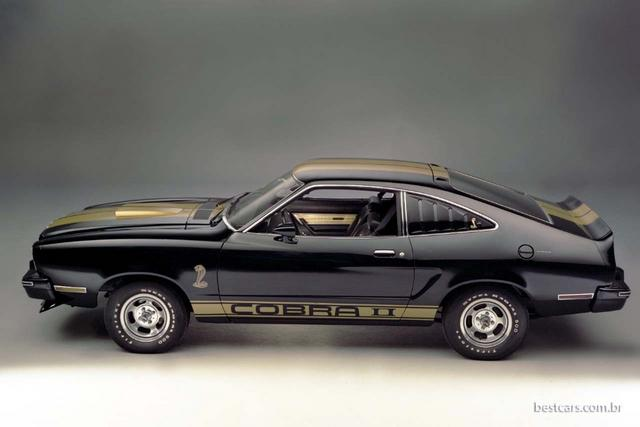

Um pobre de mente parcela um carro novo a cada 3 anos, sendo que poderia estar dirigindo um carro muito melhor pelo mesmo valor. Mas isso não será possível se pensar com mente pobre.
Você não gosta de comprar e dirigir um carro usado? Após poucos meses todos estarão dirigindo um carro usado. A diferença é que as pessoas com mente rica dirigem os melhores carros e os mantém por mais tempo, enquanto as pessoas com mente pobre dirigem carros medíocres e continuam os substituindo.
A mentalidade é normalmente questão de percepção de prestígio.
Para a mente pobre,
prestígio => novidades
Para a mente rica,
prestígio => qualidade
Mente pobre
Eu deveria dirigir um carro novo a cada 3 ou 4 anos, então minha preocupação é apenas com a parcela mensal.
Mente rica
Eu entendo que as pessoas ricas compram e aproveitam carros por muitos e muitos anos.